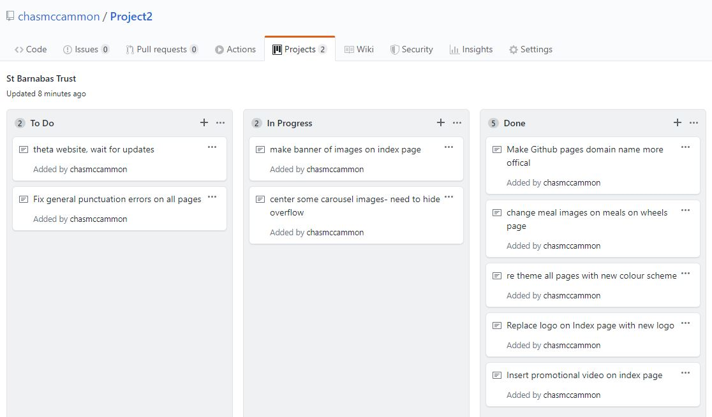

For this project 2 semester I have been assigned the task of maintaining a couple websites that have been in development from last semester.The Websites are for the St Barnabas Trust, a website for a St Clair rest home displaying information about, services and contact information for the home.The other site is for Theta New Zealand which is a Health program for NZ youth and educators , the site needs its content updated as well as the Cloudcannon instructions for the site owner to make his own updates when the website has been handed over.
Like in Project 1 i decided it would be a good measure of progress to outline my project in the Github Repository making use of the project boards to actively track my current tasks, plan future tasks and features and have a general measure of my progress. With Agile being the industry standard for developing sofware I tried to model my development habits to accomodate these techniques i had previously learned in the Sofware Engineering Paper. Below is a example of the storyboard being used whilst developing the website.
Adon decided that the domain name for the website https://chasmccammon.github.io/Project2/ based of the github pages from my repository, was not very official sounding and that I should create new Github account and repository for a domain name that better represents St Barnabas Trust I decided it would be necessary to have some version control for the website so having 2 accounts with the same content I decided I would use my private Github account for version control while using the new official account to make new changes on, which gave me a constant backup that I could roll back to in case I overwrite the new version with an error and cannot recover the working code.
Initially the web page for The St Barnabas Trust needed some minor punctuation and formatting changes to its body text and a promotional Youtube video embedded in the About page. After a meeting with the client a few more changes were outlined, these included a change of logo on all pages from the current logo, change the colour scheme of the entire site using the hex codes taken from the new logo, to update the current food pictures in the Meals on Wheels page and reformat some images on the image slider on the about page that were cropped incorrectly. The Change of logo and corresponding theme took an eye for design to make work with the current site and with some input from Adon we produced the site pictured Below